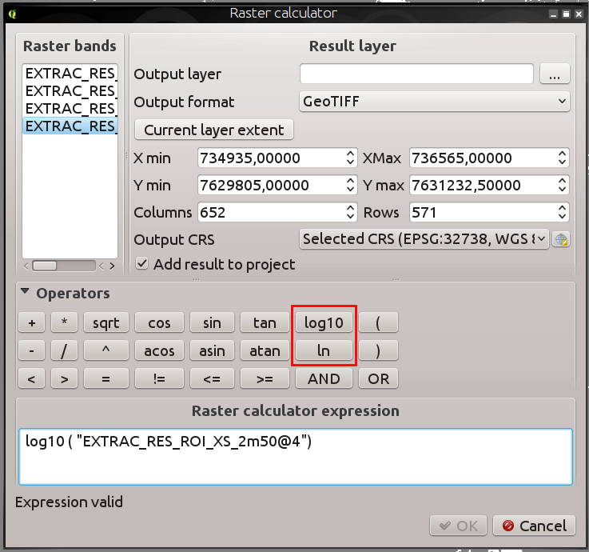
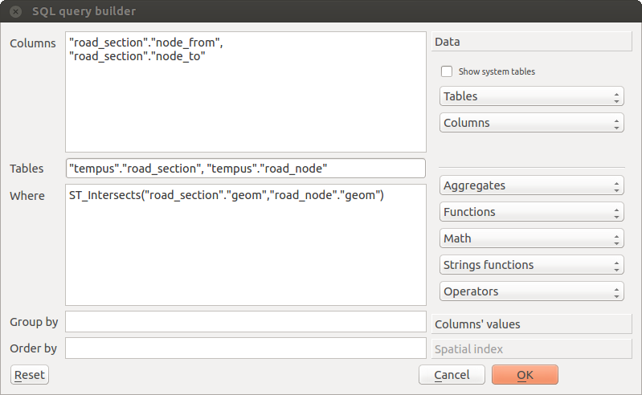
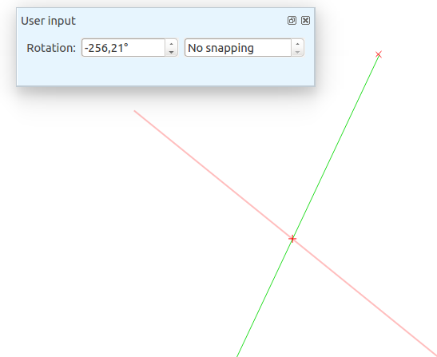

QGIS 2.10 pakeitimai¶
Tai kitos QGIS versijos - 2.10.0 „Piza“ pakeitimai. Pizoje 2010 metų kovo mėnesį buvo rengiamas mūsų vystymo susitikimas.
Paskutinė laida
Tai eilinė laida, išleidžiama kas 4 mėnesius. Ji duoda jums prieigą prie naujausių mūsų kuriamų funkcijų ir rodo QGIS vystymo pačius paskutinius pasiekimus. Jei dirbate gamybinėje aplinkoje, kur norite konservatyviau žiūrėti į naujo funkcionalumo diegimą naudotojams, mes taipogi teikiame ir ilgalaikę (LTR) QGIS laidą. Dabartinė LTR versija yra 2.8.2, ją rasite download.qgis.org. LTR laida bus palaikoma ištisus metus perkeliant atgal klaidų ištaisymus, joks naujas funkcionalumas nebus pridedamas (t.y. nebus pridedamos naujos savybės, tik taisomos klaidos ir trivialios problemos). QGIS 2.10 „Piza“ versijoje teikiamos savybės bus įtrauktos į kitą LTR laidą (kurią planuojama išleisti 2016 metais), taigi šios laidos naudojimas suteikia puikią galimybę pabandyti naują funkcionalumą, kuris atsiras kitoje LTR.
Naujos QGIS 2.10 „Piza“ savybės
QGIS 2.10.0 rasite daug naujų puikių savybių, pataisymų ir funkcionalumo, dėl kurių populiariausia atvira darbastalio GIS tampa dar naudingesne. Į programinę įrangą įtraukus naują funkcionalumą visada atsiranda naujų klaidų tikimybė - jei šioje laidoje rasite klaidų arba problemų, prašome užpildyti pranešimą QGIS klaidų registravimo sistemoje.
Padėkos
Norėtume padėkoti programuotojams, dokumentuotojams, testuotojams ir dar būriui įvairių žmonių, kurie savanoriškai skiria laiką ir pastangas (arba finansuoja žmones, kurie tai daro).
From the QGIS community we hope you enjoy this release! If you wish to donate time, money or otherwise get involved in making QGIS more awesome, please wander along to qgis.org and lend a hand!
Taipogi norime padėkoti mūsų oficialiems sponsoriams už jų neįkainojamą šiam projektui teikiamą finansinę paramą.
- AUKSINIS rėmėjas: Asia Air Survey, Japonija,
- SIDABRINIS rėmėjas: Sourcepole AG, Šveicarija
- SIDABRINIS rėmėjas: Vorarlbergo valstija, Austrija
- SIDABRINIS rėmėjas: Office of Public Works, Ireland, Airija
- SIDABRINIS rėmėjas: AGH Mokslo ir technologijos universitetas, Krokuva, Lenkija
- BRONZINIS rėmėjas: www.molitec.it, Italija
- BRONZINIS rėmėjas: www.argusoft.de, Vokietija
- BRONZINIS rėmėjas: www.openrunner.com, Prancūzija
- BRONZINIS sponsorius: GKG Kassel,(Dr.-Ing. Claas Leiner), Vokietija
- BRONZINIS rėmėjas: Customer Analytics, JAV
- BRONZINIS rėmėjas: Urbsol, Australija
- BRONZINIS rėmėjas: MappingGIS, Ispanija
- BRONZINIS rėmėjas: Lutra Consulting, Jungtinė Karalystė
- BRONZINIS rėmėjas: ADLARES GmbH, Vokietija
- BRONZINIS rėmėjas: Avioportolano Italia, Italija
- BRONZINIS rėmėjas: GeoSynergy, Australija
- BRONZINIS rėmėjas: Gaia3D, Pietų Korėja
- BRONZINIS rėmėjas: Royal Borough of Windsor and Maidenhead, Jungtinė Karalystė
- BRONZINIS rėmėjas: Chartwell Consultants Ltd, Kanada
- BRONZINIS rėmėjas: Trage Wegen vzw, Belgija
- BRONZINIS rėmėjas: GIS-Support, Lenkija
- BRONZINIS rėmėjas: GIS3W, Italija
- BRONZINIS rėmėjas: GFI - Gesellschaft fr Informations technologie mbH, Vokietija
- BRONZINIS rėmėjas: AGH, Mokslo ir technologijų universitetas, geologijos, geofizikos ir aplinkos apsaugos fakultetas, Lenkija
A current list of donors who have made financial contributions large and small to the project can be seen on our donors list. If you would like to become and official project sponsor, please visit our sponsorship page for details. Sponsoring QGIS helps us to fund our six monthly developer meetings, maintain project infrastructure and fund bug fixing efforts.
QGIS yra atvira programinė įranga ir jums jokiu būdu neprivalu mokėti norint ją naudoti. Priešingai, mes norime skatinti kiek galima daugiau žmonių naudoti ją nepriklausomai nuo jūsų finansinio ar visuomeninio statuso - mes tikime, kad duodant žmonėms įrankius, teikiančius galimybę daryti erdvinius sprendimus, galima sukurti geresnę visos žmonijos visuomenę.
- Bendri
- Analizės įrankiai
- Naršyklė
- Duomenų tiekėjai
- Duomenų valdymas
- Diagramos
- Skaitmeninimas
- Etiketės
- Žemėlapio kūrėjas
- Programavimas
- QGIS Serveris
- Simbologija
- Savybė: priderinti kategorijas prie turimų stilių
- Savybė: keisti simbolių dydį naudojant graduotą braižymą
- Savybė: nauja parinktis leidžianti išvengti automatinio geoobjektų apkarpymo pagal žemėlapio plotą
- Savybė: dydis ir pasukimas buvo pašalinti iš sudėtingesnio meniu
- Savybė: nuo duomenų priklausančios šrifto žymeklio savybės
- Savybė: vizualizuokite ir keiskite graduotą braižymą naudodami histogramą
- Savybė: dydžio, pasukimo ir brėžimo pločio išraiškos simbolisto lygyje
- Savybė: gyvi sluoksnių efektai sluoksniams ir simboliniams sluoksniams
Bendri¶
Savybė: dabar galima redaguoti jungimo operacijos parametrus¶
Nuo šiol galima redaguoti sujungimo operacijos parametrus (tokius kaip jungimo priešdėlį ar jungiamus stulpelius) po to, kai sujungimas jau buvo sukurtas. Iki šio pakeitimo tekdavo ištrinti ir iš naujo sukurti visą sujungimą.

Savybė: sluoksnius su sujungimais jau galima filtruoti¶
Iki 2.10 versijos sluoksnio filtruoti nebuvo galima, jei jis turi bent vieną jungtį. Dabar jį vis tiek galima filtruoti, bet tik naudojant pradinės vedančiosios lentelės stulpelius.

Savybė: bendri patobulinimai¶
Be kitų žemiau pateiktų elementų, buvo padaryti šie patobulinimai:
- Taškų debesies (angl. pointcloud) sluoksnių palaikymas PostGIS
- Prišliejamuose valdikliuose patobulintos piktogramų juostos ir piktogramos - jos užima mažiau vietos ekrane ir geriau atrodo OSX
- GRASS priedo / tiekėjo patobulinimai
- Nelotyniškų raidžių palaikymas išlenktose etiketėse
- Stipriai patobulinti ir greitesni rastro skaičiavimo ir geopririšimo įrankiai
- Patobulinta nuo duomenų priklausančių etikečių savybių lango sąsaja ir darbo eiga

Savybė: pagerintas potencialių projekto failo perrašymų valdymas¶
QGIS 2.10 įspės, kai bandysite įrašyti projekto failą, kurio paskutinė redakcijos data pasikeitė po projekto įkėlimo. Tai naudinga, kai daugiau nei viena naudotojo sesija atidarė tą patį projekto failą ir abi sesijos bando įrašyti pakeitimus į projekto failą.
Šią savybę sukūrė: Jürgen Fischer (norBIT)

Savybė: naujas geometrijos varikliukas¶
QGIS 2.10 turi naują geometrijos varikliuką. Jūs nepastebėsite daug skirtumų naudotojo sąsajoje, bet tai pagrindas sudėtingesnėms geoerdvinėms galimybėms, kurias mes galėsime sukurti ateityje. Nauja versija palaiko kreivinius geometrijos tipus (taigi pavyzdžiui galima bus vaizduoti eismo žiedą kaip apskritimą, o ne segmentuotą poligoną, panašų į apskritimą) ir supranta z/m reikšmes geometrijose. Norėdami naudoti kreives QGIS’e jūs turėsite naudoti PostGIS arba panašią duomenų saugyklą, kuri moka išreikšti kreivinių linijų geometrijas. Jei norite pažaisti, galite pabandyti paprastą pavyzdį jūsų PostGIS duomenų bazėje:
-- Table: curves DROP TABLE curves;
CREATE TABLE curves (
id bigserial NOT NULL,
geometry geometry(CURVEPOLYGON, 4326),
name text,
CONSTRAINT p_key PRIMARY KEY (id)
);
INSERT INTO curves VALUES ( 1, st_geomfromtext(
'CURVEPOLYGON(CIRCULARSTRING(1 1,1 2, 2 2, 2 1, 1 1))', 4326), 'test');
Tada į jūsų projektą pridėkite sluoksnį „curves“.
Šią savybę sukūrė: Marco Hugentobler (Sourcepole AG)
Šią savybę finansavo: KantonSolothurn, Switzerland

Analizės įrankiai¶
Savybė: naujas statistinės suvestinės priklijuojamas valdiklis¶
Gali rodyti vektorinio sluoksnio arba pažymėjimo lauko arba išraiškos suvestinę statistiką (pvz. vidurkį, standartinį nuokrypį, …). Tai pateikiama kaip naujas priklijuojamas skydelis, kurį galite įjungti per meniu „Rodymas -> Skydeliai -> Statistika“. Pastebėtina, kad statistiką skaičiuoti galėsite tik vektoriniams sluoksniams, kurie turi skaitmeninį lauką.

Savybė: rastro skaičiuotuve naudokite logaritmines funkcijas¶
Rastro skaičiuotuvas (QGIS meniu Rastras -> Rastro skaičiuotuvas) - tai įrankis, leidžiantis vykdyti matricinius veiksmus viename ar daugiau rastrinių sluoksnių. Su QGIS 2.10 rastro skaičiuotuve jau galite naudoti LN ir LOG10 funkcijas.

Savybė: naujos zoninės statistikos savybės¶
Zoninė statistika leidžia ištraukti akumuliuotas reikšmes iš taškų, esančių po poligonu. Šios savybės buvo pridėtos prie mūsų zoninės statistikos įrankio:
- dabar galite parinkti, kurią statistiką reikia skaičiuoti
- pridėta papildoma statistika (vidurkis, standartinė deviacija, min, maks, diapazonas, mažuma, dauguma ir įvairovė)
- galimybė parinkti rastro juostą, naudojamą statistikos ištraukime
Pastebėtina, kad zonų statistika yra „bazinis priedas“ (t.y. priedas, kuris įdiegiamas QGIS diegiklio), bet pagal nutylėjimą jis būna išjungtas. Kad zonų statistika atsirastų Rastro meniu, jūs turite priedų tvarkyklėje įgalinti šį priedą ir tada įjungti meniu įrašą.

Naršyklė¶
Savybė: naujas naršyklės savybių valdiklis¶
Naudojant QGIS naršyklės prišliejamus skydelius (Rodymas -> Skydeliai -> Naršyklė), dabar galite įjungti savybių valdiklį failų sistemos medžio apačioje. Šiame skydelyje bus rodomos savybės bet kokio duomenų šaltinio, ant kurio jūs paspausite. Taip daug paprasčiau ir greičiau peržiūrėti pagrindinę jūsų parinkto duomenų rinkinio informaciją. Norint perjungti savybių rodinį, turėtumėte naudoti piktogramą i, kurią rasite naršyklės skydelio viršuje.

Savybė: nauja naršyklės piktograma¶
QGIS naršyklė - tai atskira nepriklausoma aplikacija, leidžianti naršyti ir peržiūrėti jums prieinamus GIS duomenų rinkinius (iš jūsų failų sistemos, duomenų bazių jungčių, žiniatinklio paslaugų ir t.t.). Ankstesnėse QGIS laidose mes naudojome nedidelę piktogramą, labai panašią į QGIS apllikacijos, dėl ko naudotojai dažnai painiodavosi. Kad sumažintumėm neteisingos aplikacijos paleidimą, mes sukūrėme naują piktogramą QGIS naršyklei.

Duomenų tiekėjai¶
Savybė: DXF eksporto patobulinimai¶
DXF eksportas pastoviai tobulinamas paskutinėse trijose QGIS versijose. Šioje versijoje atsiranda patobulintas SVG arba paprastų žymeklių konvertavimas į DXF blokus, pataisytos kelios klaidos ir problemos, dėl kurių buvo gaunamas nepilnas (neperskaitomas) DXF failas. Nuotraukoje matote pradinį rodinį QGIS’e kairėje, o dešinėje - eksportuoto DXF vaizdą Autodesk TrueView programoje.
Taipogi skaitykite šį straipsnį svetainėje qgis.ch, kuriame paaiškinama, kas palaikoma, o kas nepalaikoma.
Šią savybę sukūrė: Jürgen Fischer (norBIT)
Šią savybę finansavo: Morges, Uster, Vevey ir SIGE bendruomenės

Savybė: išraiškų filtrai PostGIS tiekėjo pusėje¶
QGIS 2.10 leidžia filtruoti geoobjektus duomenų bazės pusėje. Tik palaikomos išraiškos bus siunčiamos į duomenų bazę. Išraiškos su nepalaikomais veiksmais arba funkcijomis bus naudojamos vietiniame įvertinime.
Norint naudoti šią savybę turite ją įjungti Nustatymai -> Parinktys -> Duomenų šaltiniai. Jei jūsų filtro išraiška suderinama su PostgreSQL, ji bus automatiškai vykdoma serverio pusėje. Šią savybe taip pat galite naudoti ir python’o API, pavyzdžiui naudojant šiuos kvietimus.
QgsFeatureRequest().setFilterExpression( expression )
arba
QgsVectorLayer::getFeatures( expression )

Duomenų valdymas¶
Savybė: virtualius laukus jau galima keisti¶
Iki 2.8 versijos jums reikėjo ištrinti ir iš naujo sukurti virtualius laukus, jei norėjote pakeisti virtualaus lauko skaičiavimo išraišką. 2.10 galite nueiti į kortelę Laukai ir ten paspausti mažą mygtuką Išraiška, kad atvertumėte išraiškos redaktorių, kuriame galėsite pakeisti virtualiame lauke naudojamą išraišką.
Šią savybę sukūrė: Matthias Kuhn (OpenGIS)
Šią savybę finansavo: Usterio miestas, Šveicarija

Savybė: eilutės redagavimo automatinis pabaigimas skirtas ValueRelation redagavimo valdikliui¶
Vektorinių sluoksnių reikšmės ryšio redagavimo valdikliui (Sluoksnis -> Savybės -> Laukai -> Redagavimo valdiklis -> Reikšmės ryšys) dabar galima įjungti automatinį baigimą, kai pradedate rašyti į geoobjekto formą.
Savybė: DB tvarkytojo patobulinimai¶
DB tvarkytojas turi dvi naujas savybes:
Kuriant sluoksnį kaip užklausą nebereikia unikalaus sveiko skaičiaus stulpelio
Daugiau nereikia unikalaus sveiko skaičiaus stulpelio, kai kuriate QGIS sluoksnį naudojant SQL užklausą. Tokiu atveju bus naudojamas automatiškai didėjanti skaičių seka.
Integracija su SQL užklausų kūrėju
Naujas DB tvarkytojo langas leidžia kurti SQL užklausas naudojant valdiklius, kuriuose lentelių pavadinimai, stulpelių pavadinimai ir funkcijos gali būti parenkamos. Jis atkeltas iš QSpatialite priedo ir veikia su PostGIS ir Spatialite tiekėjais.
Šias savybes finansavo: MEDDE (French Ministry of Sustainable Development)
Šias savybes sukūrė: Hugo Mercier / Oslandia

Savybė: filtrų susiejimas pririštų klasifikatorių valdikliui¶
Norint parinkti susietus įrašus iš kitų lentelių, galima naudoti pririštų klasifikatorių valdiklius. Elementus parinkti galima arba grafiškai pažymint juos žemėlapyje, jei pririštas elementas turi susietą geometriją, arba parinkti elementą pagal pririštą id. Kad būtų galima vykdyti neerdvinį parinkimą, dabar galima apriboti parinkčių sąrašą filtrais (susietais arba nesusietais). Jei filtrai yra susieti, ruošiant parinkčių sąrašą jų sąlygos kombinuojamos operacija „IR“. Įjungus susietą filtrą įjungiamas paveldimasis režimas, taip kiekvienas filtras rodo tik įrašus, kurie atitinka ankstesnio filtro sąlygas. Tai labai naudinga, kai reikia parinkti hierarchinius duomenis, tokius kaip Miestas -> Gatvė -> Numeris.
Šią savybę sukūrė: Matthias Kuhn (OpenGIS)
Šią savybę finansavo: SIGE

Diagramos¶
Savybė: diagramų patobulinimai¶
QGIS diagramų funkcionalumas leidžia užkelti paprastas skritulines diagramas arba histogramas virš geoobjektų žemėlapyje. Šioje laidoje diagramų funkcionalumas gavo šiuos patobulinimus:
- Diagramas galima išjungti neprarandant nustatymų
- Pridėta parinktis visada rodyti diagramas sluoksniui
- Atnaujinta diagramų naudotojo sąsaja supaprastinant dialogą, dėl ko jis tampa draugiškesnis naudotojui
- Diagramų klasės dabar rodomos sluoksnio legendoje

Skaitmeninimas¶
Savybė: pagerintas geometrijos pasukimo įrankis¶
Geometrijos pasukimo įrankis yra sudėtingas skaitmeninimo įrankis, leidžiantis norimu kampu pasukti geometriją. Padaryti tokie pasukimo įrankio patobulinimai:
- pasukimo žemėlapio įrankyje dabar galima naudoti skaitmeninę įvestį
- galite naudoti iškrentančius laukus kampų nustatymui
- pridėtas kampų pritraukimo palaikymas (tiesiogiai įjungiamas naudojant
shift + paspaudimas) - pasukimo pririšimas apibrėžiamas
CTRL+paspaudimu, o ne pelės perkėlimu

Etiketės¶
Savybė: „Sekti tašką“ lygiavimas kelių eilučių etiketėms¶
Įjungus šį režimą, etikečių lygiavimas priklauso nuo galutinės etiketės pozicijos taško atžvilgiu. Pavyzdžiui jei etiketė piešiama taško dešinėje, tai etiketė bus lygiuojama pagal dešinį kraštą, o jei ji piešiama taško dešinėje - ji bus lygiuojama pagal kairįjį kraštą. tai stipriai pagerina kelių eilučių etiketes taškų sluoksniuose.

Žemėlapio kūrėjas¶
Savybė: mastelio dydžio nustatymo pagal norimą plotį režimas¶
Ankstesnėse QGIS versijose buvo sunku naudoti grafinius mastelius, kai potencialių mastelio elementų žingsniai buvo dideli. Mastelis labai greitai tapdavo arba per platus, arba per siauras ir reikėjo rankomis derinti segmentų dydžius (vienetus per segmentą) po kiekvieno mastelio pakeitimo. Tai taip pat reiškė, kad grafiniai masteliai buvo nelabai panaudojami Atlaso serijinam spausdinimui arba QGIS serveryje, kai nebuvo žinomas galutinis mastelis. QGIS 2.10 dabar galima nurodyti minimalų ir maksimalų vieno segmento ilgį milimetrais ir QGIS automatiškai priderina vienetų per segmentą skaičių, paliekant apvalias reikšmes.
Nepamirškite taip pat nustatyti mastelio lygiavimą, ypač jei norite, kad jis būtų centruotas arba lygiuotas pagal dešinį kraštą!
Šią savybę sukūrė: Sandro Mani (Sourcepole AG)
Šią savybę finansavo: Kanton Glarus, Šveicarija

Programavimas¶
Savybė: patobulinimai programuotojams¶
Mes padarėme keletą pakeitimų ir patobulinimų, kurie bus įdomūs programuotojams:
- Padidinome minimalios Qt4 versijos reikalavimą iki 4.8. Qt4 - tai vienas pagrindinių C++ įrankių rinkinių / bibliotekų, kurios naudojamos kuriant QGIS.
- Nauja
QgsStatisticalSummaryklasė skaičiuoja skaičių sąrašo statistiką. - Leidžiama keisti vektorinio sluoksnio duomenų šaltinį.
- Konkretus klasių dalinimasis:
QgsField,QgsFields,QgsDataDefined,QgsFeature,QgsGeometry. - Priedai dabar gali sukurti savus įrašus naršyklės valdiklyje su dvejomis naujomis klasėmis:
QgsDataItemProviderirQgsDataItemProviderRegistry.

QGIS Serveris¶
Savybė: tolerancijos parametro palaikymas WMS GetFeatureInfo užklausose¶
Naudojant WMS sluoksnius, kuriuos teikia QGIS Serveris, dabar galite nurodyti toleranciją kiek toli nuo paspaudimo vietos veiks GetFeatureInfo užklausos. Tai labai svarbu mobiliems įrenginiams, kur daug sunkiau tiksliai parodyti geoobjektą. Iki šios savybės, buvo beveik neįmanoma identifikuoti tašką arba linijinius geoobjektus mobiliuose įrenginiuose su QGIS serveriu. GetFeatureInfo užklausose galite pridėti šiuos parametrus:
FI_POINT_TOLERANCE=16&FI_LINE_TOLERANCE=8&FI_POLYGON_TOLERANCE=4
ir pakeisti tolerancijos reikšmes (taškais), kad jos atitiktų jūsų poreikius.
Šią savybę sukūrė: Marco Hugentobler (Sourcepole AG)
Šią savybę finansavo: Usterio miestas, Šveicarija

Simbologija¶
Savybė: priderinti kategorijas prie turimų stilių¶
Kategorizuoto braižymo sudėtingesniame meniu pridėta parinktis nurodyti kategorijas simboliams, kurie atitinka pavadinimą stilių bibliotekoje arba XML stiliaus faile.

Savybė: keisti simbolių dydį naudojant graduotą braižymą¶
Braižytojai, tai QGIS posistemė, leidžianti kurti sudėtingas kartografines jūsų duomenų pateiktis. Graduotas braižymas keičia simbolį priklausomai nuo pastoviai besikeičiančios reikšmės vektoriniame sluoksnyje. Ankstesnėse QGIS versijose jūs galėjote keisti tik spalvą (pavyzdžiui naudodami spalvų rampą). QGIS 2.10 graduotas simbolio braižymas leidžia keisti ir dydį arba spalvą. Taškų sluoksniams jūs galite keisti taško dydį, linijoms jūs galite keisti linijos plotį. Poligonai tebeturi tik galimybę keisti spalvą, linijos plotis vis dar nepalaikomas.
Šią savybę sukūrė: Vincent Mora (Oslandia)
Šią savybę finansavo: Agence de l’eau Adour-Garonne

Savybė: nauja parinktis leidžianti išvengti automatinio geoobjektų apkarpymo pagal žemėlapio plotą¶
Ši parinktis (kurią rasite po sudėtingesniu simbolių meniu) išjungia automatinį linijų/poligonų apkarpymą pagal drobės apimtį. Kartais dėl šio apkarpymo gaunama nepageidaujama simbologija (pavyzdžiui centroidas užpildomas kai centroidas turėtų visada būti tikras geoobjekto centroidas).

Savybė: nuo duomenų priklausančios šrifto žymeklio savybės¶
Dauguma šrifto žymeklio savybių dabar galima nustatyti pagal duomenis, įskaitant žymeklio dydį, pasukimą ir simbolį.

Savybė: vizualizuokite ir keiskite graduotą braižymą naudodami histogramą¶
Prie graduoto braižymo pridėta nauja histogramos kortelė, kurioje rodoma interaktyvi priskirto lauko arba išraiškos reikšmių histograma. Naudojant šią histogramą galima perkelti ar pridėti klasių ribas.
Šią savybė finansavo: ADUGA
Šią savybę sukūrė: Nyall Dawson

Savybė: dydžio, pasukimo ir brėžimo pločio išraiškos simbolisto lygyje¶
Dydis ir pasukimas gali būti nurodomos išraiška visiems simbolių lygiams, kuriantiems žymeklį. Plotį galima nurodyti išraiška visiems simboliams, kuriantiems liniją.
Simboliams legenda kuriama skirtingiems dydžiams. Tai leidžia kurti daugiavariantinės analizės legendą klasifikuojant/graduojant spalvomis.
Padėjėją su peržiūra galima rasti per duomenų priklausymo mygtuką, jo pagalba galima kurti savo dydžio išraišką. Galimi trys metodai: Flannery, Plotas ir Spindulys.
Šią savybę sukūrė: Vincent Mora (Oslandia)
Šią savybę finansavo: Agence de l’eau Adour-Garonne

Savybė: gyvi sluoksnių efektai sluoksniams ir simboliniams sluoksniams¶
Gyvi sluoksnių efektai - tai dar vienas priedas prie jau didelio rinkinio QGIS kartografinių galimybių. Jie leidžia pridėti įvairius braižymo efektus į braižymo eigą. Naudojant gyvus efektus galite daryti tokius dalykus kaip pridėti šešėlius po jūsų simboliu, ištempti ir iškarpyti braižomą simbolį. Taipogi galite dėlioti šiuos efektus vieną po kitu ir nurodyti, ar efektas turi būti progresinis (t.y. pridėti save prie ligšiolinės braižymo būsenos) arba diskretinis (iš naujo pridedantis pradinę geometriją į braižymo eigą).
Pastaba: Šis funkcionalumas skirtas patyrusiems naudotojams ir mes norėtume pastebėti, kad per didelis jo naudojimas gali stipriai sulėtinti braižymą, taigi reikėtų pagalvoti apie skirtingų braižymo profilių naudojimą jūsų sluoksnyje - vieno galutinio aukštos kokybės žemėlapio generavimui ir kito - darbo režimui.
Šią savybę sukūrė: Nyall Dawson
Šią savybę finansavo: minios-finansavimo iniciatyva